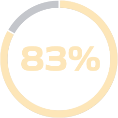

3
Foster Stakeholder Capitalism


The push for stakeholder capitalism is coming from
the top: 83% of senior executives agree or strongly
agree
that the pandemic was a tipping point for stakeholder capitalism.